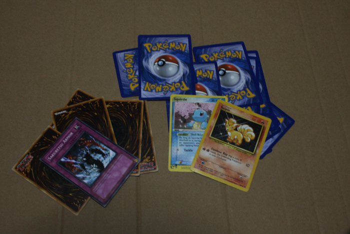
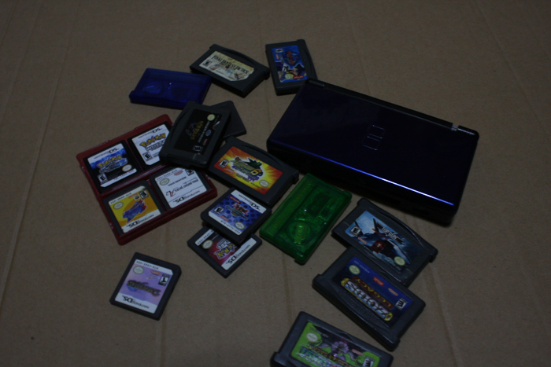

Emanuel Capistran
Larry Clark emphathiced as well as socialized with the younger generation of rebel teenagers and young adults. his photography has been described by critics as "exposing the reality of American suburban life at the fringe and ... shattering long-held mythical conventions that drugs and violence were an experience solely indicative of the urban landscape." My response to Clark's work is my own series of photographs about the types of games me and my friends played while growing up (my gaming evolution).

